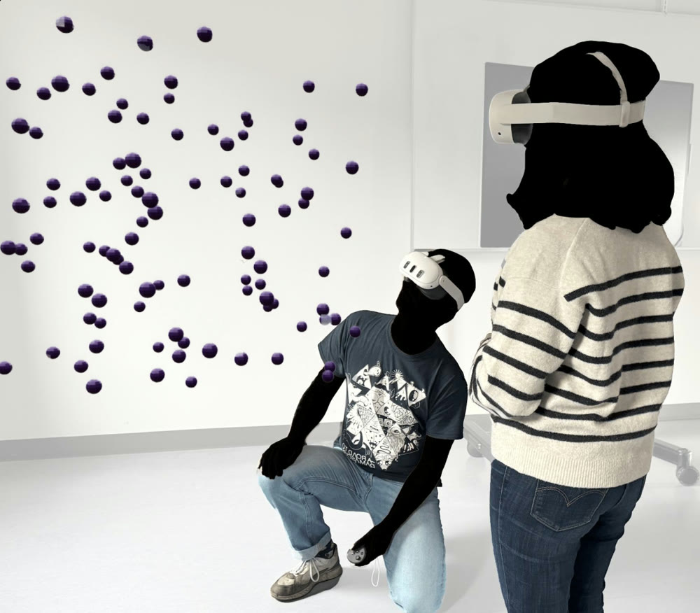
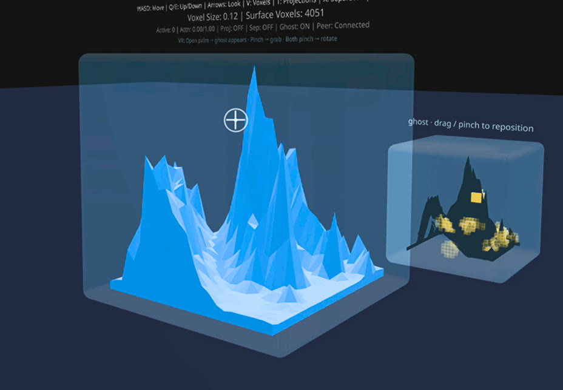
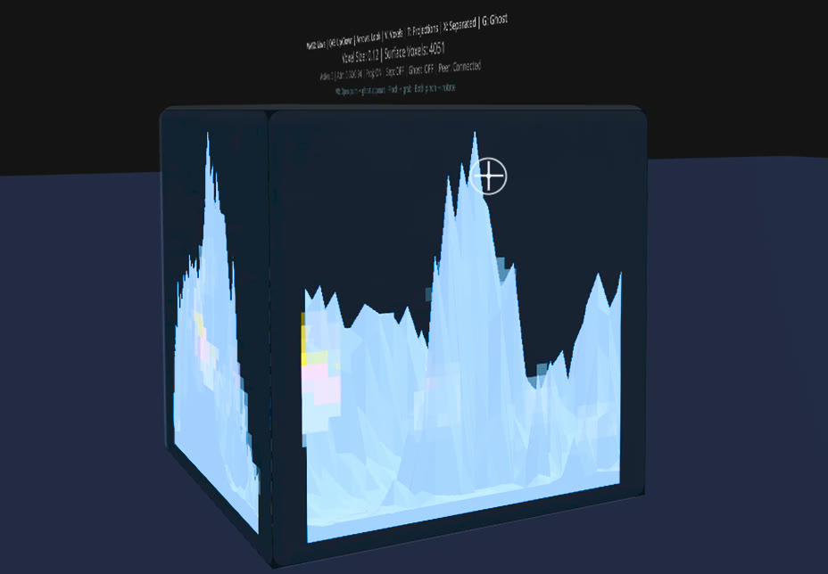
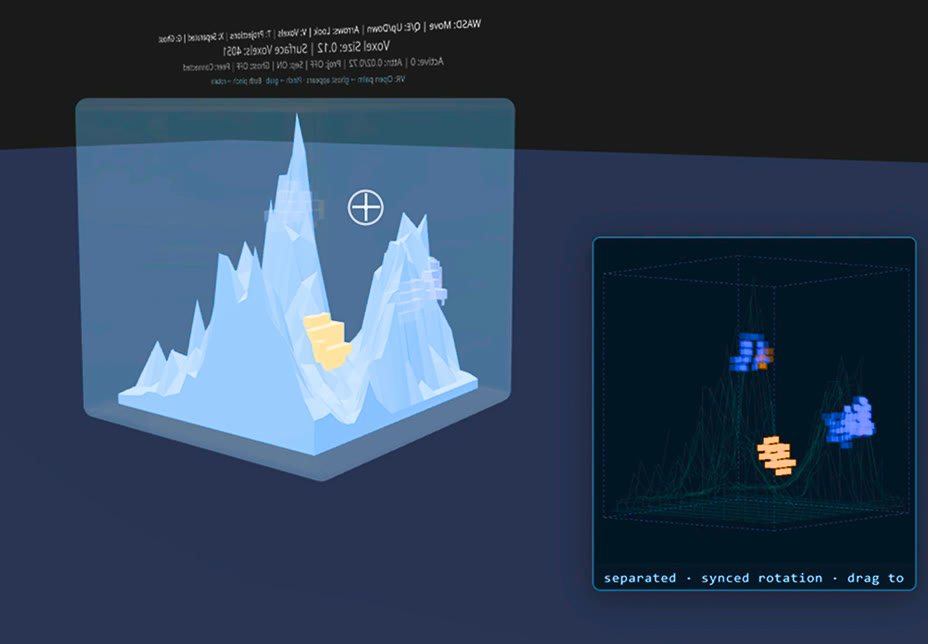
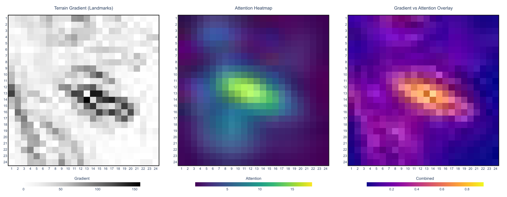

HeedVision
Attention Awareness in Collaborative Immersive Analytics Environments
Follow along & ask questions
“Did you already check over there?”

Each analyst sees the data. Neither sees what the other has already looked at.
Knowing what your partner has seen can matter as much as what you see.
Group awareness is harder in immersive 3D
Perceiving what your collaborators are doing in a shared space
Gutwin & Greenberg, CHI 1998
Separate viewpoints, attention spread across the room, no shared screen to point at
Tracks where a viewer has looked and feeds it back into the display, but for one viewer
Srinivasan et al., TVCG 2025
Collaborative attention-aware visualization
From one viewer to many
One viewer: capture, record, display
Capture
Record
Display
Many viewers: every stage gets a new problem
Capture
Tell people apart while tracking them all at once
Record
One accumulator per person per target, and ways to combine them
Display
Show whose attention, not just how much, so partners can coordinate
More than one viewer means new kinds of attention
Joint
We look at the same thing
Distributed
We split up the space
Sequential
I build on where you looked
Cumulative
Everything the team has covered
Per-person memory that fades
Where and when attention shows up
HeedVision
One quadrant built for the study, three as prototypes
Attention as voxels you can see
Head direction as a gaze proxy, cast into a voxel grid 10 times a second
you partner both · more attention, more opaque
WebXR + React Three Fiber, in the Meta Quest 3 browser
Three more quadrants, as working prototypes



A miniature you can move
Projections on the bounding box
A 2D overview panel
VR-only prototypes with local sync; not formally evaluated.
Does it help?
An exploratory study with eight pairs
A treasure hunt for pairs
co-located pairs in AR, 16 people
per search · targets glow only when seen up close
Without landmarks, redundant search dropped by about 70%
vs 62.4% without CAAV
“We have no verbal communication during the condition where we have [CAAV].”P8
Directional, not significant: 4 pairs per condition (permutation p = .26)
With landmarks, overlap went up, and so did teamwork

Strongest supported result (p = .029)
People kept it on, and made a game of it
overall; trended higher in terrain
“…a nice blue side and a nice orange side with very little overlap.”P6
“It would be nice if color of your attention would fade away [without noticing].”P8
Show attention where the space gives you nothing to point at
- Abstract, discrete spaces without landmarks
- A large space to divide and cover fully
- Locations that are hard to describe out loud
e.g. t-SNE / UMAP embeddings, molecules, 3D networks
- Data with its own spatial structure
- Scenes that are already visually busy
An exploratory first step
- Pairs only; colours stop scaling past ~4 people
- Head direction, not eye tracking
- One synthetic task, four pairs per condition
- One baseline: no attention display at all
- Implicit triggering and fading
- Attention to data items, not just space
- Remote and asynchronous teams
Thank you
Slides, script and your questions
Arvind Srinivasan · arvind@cs.au.dk
Niklas Elmqvist · elm@cs.au.dk